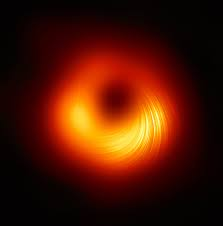

BLACK HOLES

What Is a Black Hole?

A black hole is a place in space where gravity pulls so much that even light can not get out.
The gravity is so strong because matter has been squeezed into a tiny space. This can happen
when a star is dying.
Because no light can get out, people can't see black holes. They are invisible. Space telescopes
with special tools can help find black holes. The special tools can see how stars that are very
close to black holes act differently than other stars.
How Big Are Black Holes?
Black holes can be big or small. Scientists think the smallest black holes are as small as
just one atom. These black holes are very tiny but have the mass of a large mountain. Mass is
the amount of matter, or "stuff," in an object.
Another kind of black hole is called "stellar." Its mass can be up to 20 times more than the
mass of the sun. There may be many, many stellar mass black holes in Earth's galaxy. Earth's
galaxy is called the Milky Way.
The largest black holes are called "supermassive." These black holes have masses that are
more than 1 million suns together. Scientists have found proof that every large galaxy
contains a supermassive black hole at its center. The supermassive black hole at the center
of the Milky Way galaxy is called Sagittarius A. It has a mass equal to about 4 million s
uns and would fit inside a very large ball that could hold a few million Earths.
How Do Black Holes Form?
Scientists think the smallest black holes formed when the universe began.
Stellar black holes are made when the center of a very big star falls in upon itself, or
collapses. When this happens, it causes a supernova. A supernova is an exploding star that
blasts part of the star into space.
Scientists think supermassive black holes were made at the same time as the galaxy they are in.